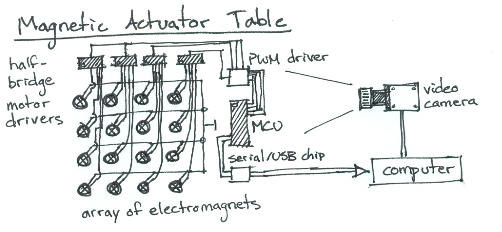
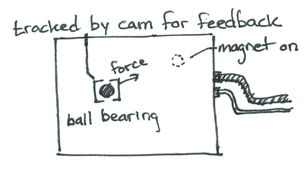
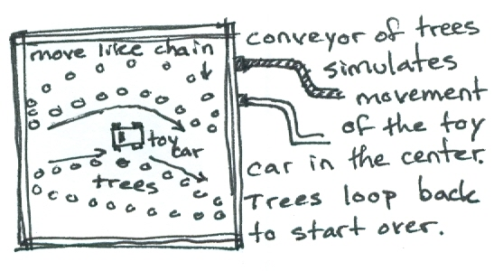

I had an idea to make a table out of a huge grid of electromagnets so that ferrous or magnetic objects could be moved around on the surface under the control of a computer.

With computer vision objects could be tracked and moved to specific target locations on the surface.

I thought it could be used for novel physical/digital games. Or in factories to assist sorting and assembling parts.
Done while in high school